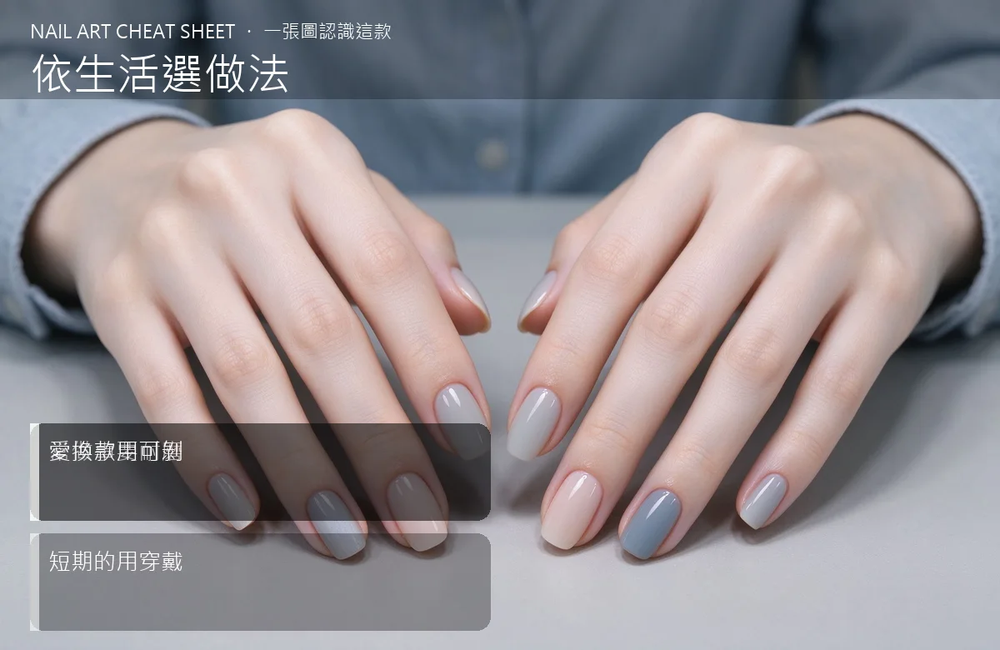

依生活選做法：常做事要耐磨
這篇做的是「依生活選做法」的對照表：持久度＋換款頻率。核心差異一句話——常做事要耐磨。看完你就能在挑款式時立刻分得出該用哪一套。
依生活選做法詳細對照表
| 比較面向 | 依生活選做法 |
|---|---|
| 常做事要耐磨 | 常做事要耐磨 |
| 愛換款用可剝 | 愛換款用可剝 |
| 短期的用穿戴 | 短期的用穿戴 |

- 代表工法：持久度＋換款頻率
- 代表成品：生活對號
- 一句話分：常做事要耐磨
為什麼依生活選做法常被搞混？
因為它們都屬於美甲的「挑對款式」，做出來的成品乍看很像，甚至同一位美甲師會同時用。真正的分水嶺不是『看起來像不像』，而是『用在哪種場合』。把這一層想通，以後看款式就不會卡住。
依生活選做法記憶口訣
常做事要耐磨。下次在款式圖上看到「常做事要耐磨」，先問自己：它比較偏哪一邊？三秒就能下判斷。
依生活選做法到底該選哪個？
持久度＋換款頻率。要做「挑對款式」的場合，優先考慮這一套的持久度與好卸程度；另一套則在需要更多變化或硬度時補位。記住：一個需求只認一個主做法，其餘都是配角。
依生活選做法常見問題
Q：為什麼要把這兩個放一起比？ A：因為它們常被搞混——同屬挑對款式、成品相近，連工具都可能共用。把差異攤開，比單獨背兩個定義更快記住。
Q：初學者先看哪一個？ A：先看「生活對號」這組對照，把兩種做法的『常做事要耐磨』各自放大看一次，差異會自己跳出來。